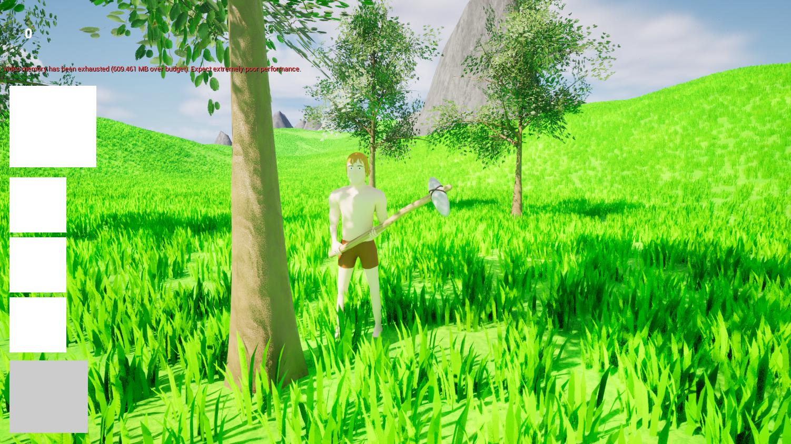
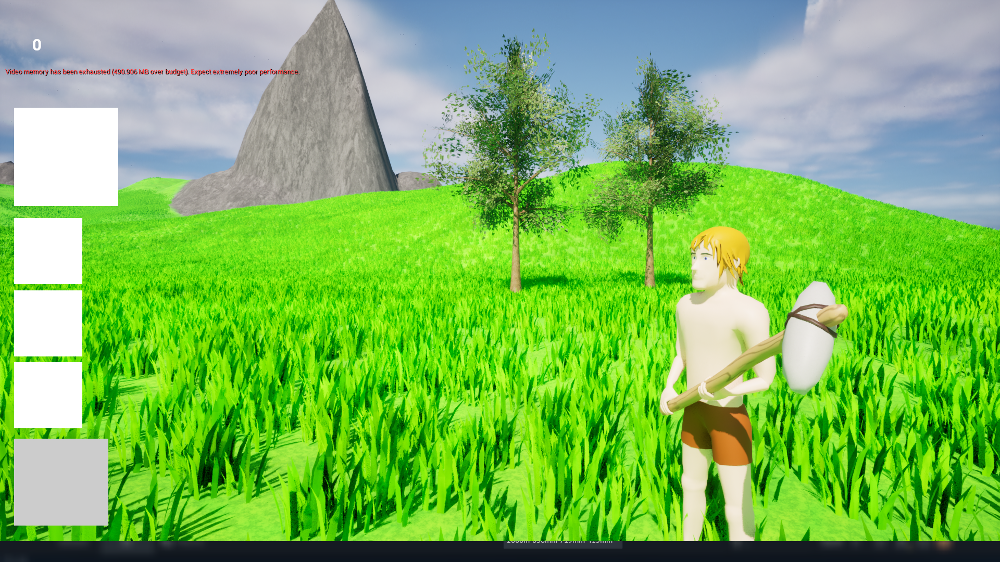

Build The Nuke
Build The Nuke is a personal project I started at the end of 2023 in order to learn more about using unreal engine 5. The game starts on an island, where 2 teams of 16 players face off against eachother. Gradually, around the island there will be resources appearing. Wood is the most common resource, being found almost everywhere and being easely gatherable, stone is a bit more rare and metals are even more difficult to find. Each team can craft u nique and strong weapons with the materials they gather. Eventually, one team will be able to craft a nuke, nuke the other side of the island where the other base is and win the match.
My Goals With this project
I primarily started this project to gain a deeper understanding of how to work with replication/netcode and how it works. I am using this project as a learning opportunity in order to advance my overall skills as a game developer for the future, since it is always a good idea to keep learning new things. I have already come very far with the project as of writing this, having completed making the basis of the replication that will be used moving forward in the project. all animations and current actions are properly replicated and I am confident in the future of this project. The end goal with this project is to release the game on steam publicly for everyone to play. Everything in the project is completely made by me, from every asset, animation and texture to the logic that makes everything work.